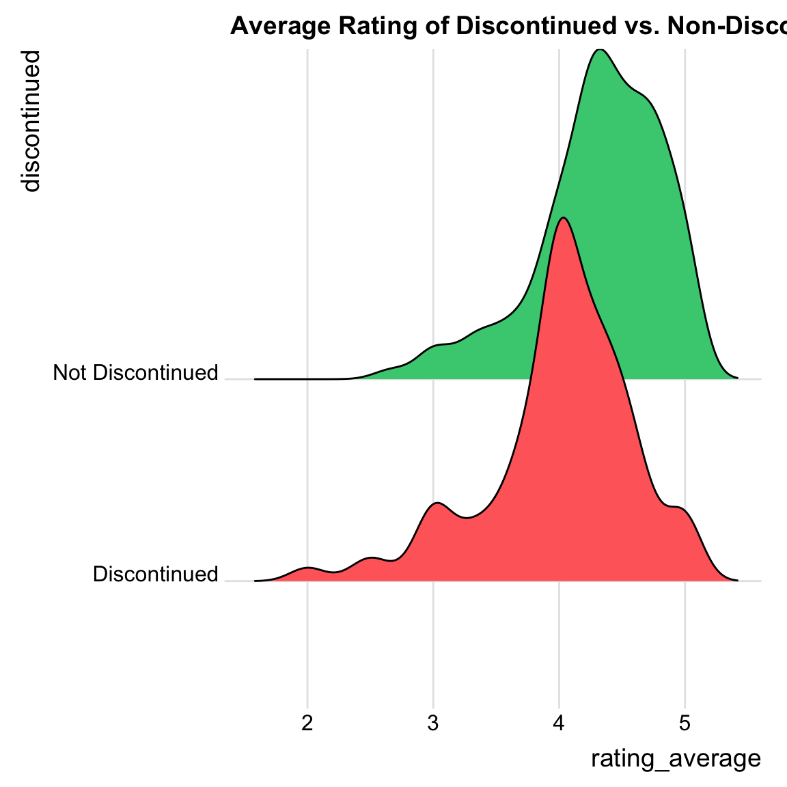

First, load libraries and dataset
## ── Attaching core tidyverse packages ──────────────────────── tidyverse 2.0.0 ──
## ✔ dplyr 1.1.4 ✔ readr 2.1.5
## ✔ forcats 1.0.0 ✔ stringr 1.5.1
## ✔ ggplot2 3.5.1 ✔ tibble 3.2.1
## ✔ lubridate 1.9.4 ✔ tidyr 1.3.1
## ✔ purrr 1.0.2
## ── Conflicts ────────────────────────────────────────── tidyverse_conflicts() ──
## ✖ dplyr::filter() masks stats::filter()
## ✖ dplyr::lag() masks stats::lag()
## ℹ Use the conflicted package (<http://conflicted.r-lib.org/>) to force all conflicts to become errorslibrary(ggbeeswarm)
library(ggmosaic)
library(waffle)
library(treemap)
library(paletteer)
library(ggridges)
# get data
tuesdata <- tidytuesdayR::tt_load('2022-10-11')## ---- Compiling #TidyTuesday Information for 2022-10-11 ----
## --- There is 1 file available ---
##
##
## ── Downloading files ───────────────────────────────────────────────────────────
##
## 1 of 1: "yarn.csv"## Warning: One or more parsing issues, call `problems()` on your data frame for details,
## e.g.:
## dat <- vroom(...)
## problems(dat)Then, organize and subset data to make it more manageable.
# Select only yarns from the 10 most popular brands
yarn_data <- data.frame(
table(yarn$yarn_company_name))
yarn_data <- yarn_data[order(yarn_data$Freq, decreasing=TRUE),]
brand_popular <- yarn_data$Var1[1:10]
print(brand_popular)## [1] Lana Grossa Ice Yarns Katia ColourMart Lang Yarns
## [6] ONline Phildar Bernat Plymouth Yarn Lion Brand
## 10981 Levels: ! Needs Brand Name ... clever sparen! ... 雪妃爾# beeswarm plot: rating average for brands
bees <- ggplot(data=yarn_pop) +
aes(x=rating_average,y=yarn_company_name,color=yarn_company_name,size=rating_count) +
ggbeeswarm::geom_beeswarm(method = "center") +
scale_color_paletteer_d("ggthemes::Classic_Purple_Gray_12")
bees## Warning: In `position_beeswarm`, method `center` discretizes the data axis (a.k.a the
## continuous or non-grouped axis).
## This may result in changes to the position of the points along that axis,
## proportional to the value of `cex`.
## This warning is displayed once per session.## Warning: Removed 38 rows containing missing values or values outside the scale range
## (`geom_point()`).# waffle plot: frequency of brands
yarn_data_short <- yarn_data[1:10,]
yarn_data_short <- rename(yarn_data_short, "company_name"="Var1")
waffle <- ggplot(data=yarn_data_short) +
aes(fill = company_name, values = Freq) +
waffle::geom_waffle(n_rows = 75, size = 0.5, colour = "white") +
coord_equal() +
scale_fill_paletteer_d("ggthemes::Classic_Purple_Gray_12") +
theme_void()
waffle# Ridgeline plot: Average Rating of Discontinued vs. non.discontinued yarns
#Change group names
yarn_pop$discontinued[yarn_pop$discontinued=="FALSE"] <- "Not Discontinued"
yarn_pop$discontinued[yarn_pop$discontinued=="TRUE"] <- "Discontinued"
# set up color palette
my_cols <- c("indianred1","seagreen3")
ggplot(yarn_pop, aes(x = rating_average, y = discontinued, fill = discontinued)) +
geom_density_ridges() +
labs(title="Average Rating of Discontinued vs. Non-Discontinued yarns") +
scale_fill_manual(values=my_cols)+
theme_ridges() +
theme(legend.position = "none")## Picking joint bandwidth of 0.139## Warning: Removed 38 rows containing non-finite outside the scale range
## (`stat_density_ridges()`).
# Tree map
# make even shorter list of popular yarn
brand_popularer <- yarn_data$Var1[1:4]
yarn_pop_short <- filter(yarn, yarn_company_name==brand_popularer)
tree_data <- as.data.frame(table(Brand=yarn_pop_short$yarn_company_name,Weight=yarn_pop_short$yarn_weight_name))
tree <- treemap(dtf=tree_data,
index=c("Brand","Weight"),
vSize="Freq",
type="index"
)